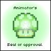
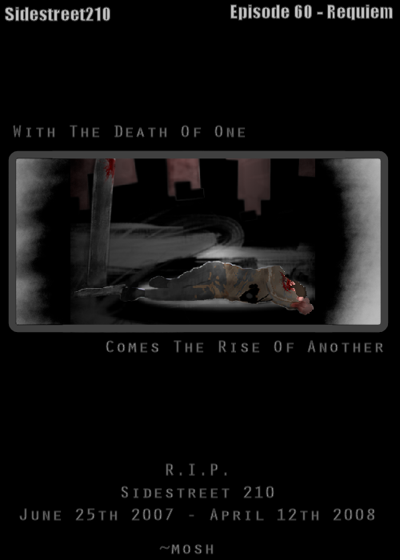

[align=center]Sidestreet 210
One big joke on life, itself.
::DRONIES 2007 - 2nd Best Online Webcomic!::
::FORUM DRONIES 2007 - Tied for 1ST PLACE Best Online Webcomic Still Being Made!::
Sidestreet 210 is over. Episode 60 was the last one.


-News-
Season 2.
Episode 51.
Rock it.
6,000 Views of this thread. Awesome sauce.
7,000 Views. Rock on.
9,800 Views. Holy crap.
10072 Views. Dear God thats a lot.
Play my 210th Map, which was dedicated to the 50th Episode milestone of Sidestreet 210.
Sidestreet 210 died 6:50, April 12th, 2008
Although he never appears in a comic - Mosh appeared in Episode 38 - "Awake". Mosh is indeed a ninja. What color is he? Thats for him to know, and you to never find out. Mind you, he doesn't look like any conventional ninja...
Episode Archive
Episode Two - "Karma" - Comic Image Link
Episode Three - "Fools" - Comic Image Link
Episode Four - "Dreamers" - Comic Image Link
Episode Five - "Fetch" - Comic Image Link
Episode Six - "Puppies" - Comic Image Link
Episode Seven - "Try Again" - Comic Image Link
Episode Eight - "Fire!" - Comic Image Link
Episode Nine - "MTI" - Comic Image Link
Episode Ten - "Fetus" - Comic Image Link
Episode Twelve - "Future" - Comic Image Link
Episode Thirteen - "Machines" - Comic Image Link
Episode Fourteen - "Pulp" - Comic Image Link
Episode Fifteen - "Gold Delay" - Comic Image Link
Episode Sixteen - "Schnuggums" - Comic Image Link
Episode Seventeen - "Weekend" - Comic Image Link
Episode Eighteen - "Fuel" - Comic Image Link
Episode Nineteen - "Drunk" - Comic Image Link
Episode Twenty - "Speak" - Comic Image Link
Episode Twenty Two - "Promoted" - Comic Image Link
Episode Twenty Three - "Ants" - Comic Image Link
Episode Twenty Four - "Bless You" - Comic Image Link
Episode Twenty Five - "Big" - Comic Image Link
Episode Twenty Six - "Love" - Comic Image Link
Episode Twenty Seven - "Melting" - Comic Image Link
Episode Twenty Eight - "Hater" - Comic Image Link
Episode Twenty Nine - "Denial" - Comic Image Link
Episode Thirty - "Spoiler" - Comic Image Link
Episode Thirty One - "Knock" - Comic Image Link
Episode Thirty Two - "Chicken" - Comic Image Link
Episode Thirty Three - "Turtles" - Comic Image Link
Episode Thirty Four - "NaN" - Comic Image Link
Episode Thirty Five - "kthx" - Comic Image Link
Episode Thirty Six - "BOO" - Comic Image Link
Episode Thirty Seven - "INK" - Comic Image Link
Episode Thirty Eight - "Awake" - Comic Image Link
Episode Thirty Nine - "Issues" - Comic Image Link
Episode Forty - "Cool" - Comic Image Link
Episode Forty Two - "Sit" - Comic Image Link
Episode Forty Three - "Roids" - Comic Image Link
Episode Forty Four - "ABC's" - Comic Image Link
Episode Forty Five - "Nympho"- Comic Image Link
Episode Forty Six - "B-Gon"- Comic Image Link
Episode Forty Seven - "Trap"- Comic Image Link
Episode Forty Eight - "Sun" Comic Image Link
Episode Forty Nine - "Haxd" - Comic Image Link
Episode Fifty - "Mare" - Comic Image Link
--Current Book--
Season 2 - Episode 51 - Horizons - Comic Image Link
Season 2 - Episode 52 - Divided We Fall - Comic Image Link
Season 2 - Episode 53 - Grills - Comic Image Link
Season 2 - Episode 54 - Slowpoke - Comic Image Link
Season 2 - Episode 55 - Elemental - Comic Image Link
Season 2 - Episode 56 - Episode - Comic Image Link
Season 2 - Episode 57 - Rock - Comic Image Link
Season 2 - Episode 58 - Sig - Comic Image Link
Season 2 - Episode 59 - Low - Comic Image Link
Episode 60 - Requiem - Comic Image Link
Last Comic Updated: April 12th, 2008
Most Recent Episode
Episode 60 - Requiem
Don't judge a book by it's cover. If one episode isn't "your thing", check out the next one when it's released. I'm sure you'll find at least one you'll like.
Permanent THANK YOU to Dave for the Pin.
Cheers,
~Mosh
Thank you Dave, Alex, Chase, Yanni, Ignate, (And All the PEEPS for that matter), LV, Keron, Bunnies, Turtle, and Kimmie for your support. Sidestreet210 wouldn't have made it this far without you all.
One big joke on life, itself.
::DRONIES 2007 - 2nd Best Online Webcomic!::
::FORUM DRONIES 2007 - Tied for 1ST PLACE Best Online Webcomic Still Being Made!::
Sidestreet 210 is over. Episode 60 was the last one.
Spoiler: Awards this comic has received (9 images)

-News-
Season 2.
Episode 51.
Rock it.
10072 Views. Dear God thats a lot.
Play my 210th Map, which was dedicated to the 50th Episode milestone of Sidestreet 210.
Sidestreet 210 died 6:50, April 12th, 2008
Spoiler: [b
Who Are The Characters?[/b]]Spoiler: BLACK
The ninja that sees most things as we do. He can be witty, and he can also be brutally cold. He's often the most violent ninja.Spoiler: GREEN
We're not sure if she's witty or just plain dumb, Green Ninja often calls everyone "Jim". Maybe it had something to do with her ex?Spoiler: DARK BLUE
Dark Blue Ninja is the oldest of all the ninjas. He's a Chef, and makes excellent Pasta (Ep.1). He also hates MTI as much as we do (Ep.9). He is also confused (or rather, ridiculed) about his sexuality; or at least his security of such (Ep's.28 and 29). Some suspect his real name to be "Dave".Spoiler: RED
Red Ninja is the "boss" ninja. He's got his head up his rump most of the time, and loves to crack jokes at other ninjas. He's a meanie. Red Ninja is also a little slow on the uptake of conversation. He's also money-hungry (Ep.15), and he gets bored on the weekends (Ep.17). Red also smokes (Ep.27).Spoiler: TEAL
The Lackey Ninja, as his boss Red Ninja calls him. He's friends with Violet Ninja, a fellow pencil-pusher under the employment of Red.Spoiler: PURPLE
He's the inquisitor of the ninjas. He ponders a lot, and thinks things through WAY too much. He is obsessed with his hair (who would have thunk' it?), and often dyes it. This is why he appears in multiple shades of purple.Spoiler: BROWN
The general smart-ass of the ninjas, Brown Ninja is in constant competition with his ex, Green Ninja. He hasn't been the same since Green spotted some gold lying around after he completed a level (Ep.6).Spoiler: LIGHT BLUE
Light Blue, of "Lieutenant Blue" as his friends call him, is a constant storyteller. She's always mucking about how strong she is, thusly the nickname, "Lt.Blue".Spoiler: FUTURE
Future Ninja appeared once (Ep.12), and was never seen again. I guess the whole crotch-kicking incident warded him off.Spoiler: SAND
The only time we've ever seen a sand-colored Ninja around here is when one corrected Green by proclaiming that their name was not "Jim". Instead, they proclaimed their name to be "Animator".Spoiler: ANTS
Believe it or not, small bugs have began training in the art of the Ninjitsu. They also seem to have an obsession with gold (Ep.23).Spoiler: Orange
Orange Ninja has an ego problem. Simply put, he likes things to be BIG. I wonder what he's hiding...? (Ep.25)Spoiler: BROWN-ISH
The joker of the Ninjas, Brown Ninja simply likes talking. People try to shut up his nonsense whenever possible by telling her jokes, as her laugh is slightly less annoying.Spoiler: GOLD
Gold Ninja, the God of all Ninjas, makes few appearances (Ep.26). He is, of course, the creator of Gold.Spoiler: ZAPPY
The floorguard pet of Black Ninja. Zappy enjoys playing fetch, and plotting the death of all other Ninjas.Spoiler: DRONETICUS III, SR.
While his name is never actually revealed, Droneticus, or "Droc" as he prefers to be called, nearly assassinated Black Ninja in the past (Ep.13). He likes his tea promptly at noon-thirty, and nibbles ever-so-slightly upon a scone while drinking such a brew. He's got a PhD in Neurozappologistical Application. He is also the author of three children's books.Spoiler: LUC
The only laser drone to have allergies (Ep.24), Luc hates all things with pollen. Sadly, Gauss Turrets emit pollen after every shot.Spoiler: KILLER
Killer, or "Turtle Killer" as he is known on the street, is a notorious pet-murderer. He often disguises himself as Pink Ninja to try to give the cops the slip, and even says his murders are "accidental", by proclaiming "Oops! I stepped on -Insert Pet Here-". Be wary of him.Spoiler: PINK
Pink left Red after he had called her a "Homie-G Dizzle Slice Dawg" (Ep.20). What the hell is that, anyways? Nonetheless, Pink is best friends with Green.Spoiler: MOSH
Episode Archive
Spoiler: SEASON 1 - Episodes 1-50
Spoiler: Book 1: Episodes 1-10
Episode One - "Food For Thought" - Comic Image LinkEpisode Two - "Karma" - Comic Image Link
Episode Three - "Fools" - Comic Image Link
Episode Four - "Dreamers" - Comic Image Link
Episode Five - "Fetch" - Comic Image Link
Episode Six - "Puppies" - Comic Image Link
Episode Seven - "Try Again" - Comic Image Link
Episode Eight - "Fire!" - Comic Image Link
Episode Nine - "MTI" - Comic Image Link
Episode Ten - "Fetus" - Comic Image Link
Spoiler: Book 2: Episodes 11-20
Episode Eleven - "You Are?" - Comic Image LinkEpisode Twelve - "Future" - Comic Image Link
Episode Thirteen - "Machines" - Comic Image Link
Episode Fourteen - "Pulp" - Comic Image Link
Episode Fifteen - "Gold Delay" - Comic Image Link
Episode Sixteen - "Schnuggums" - Comic Image Link
Episode Seventeen - "Weekend" - Comic Image Link
Episode Eighteen - "Fuel" - Comic Image Link
Episode Nineteen - "Drunk" - Comic Image Link
Episode Twenty - "Speak" - Comic Image Link
Spoiler: Book 3: Episodes 21-30
Episode Twenty One - "Animated" - Comic Image LinkEpisode Twenty Two - "Promoted" - Comic Image Link
Episode Twenty Three - "Ants" - Comic Image Link
Episode Twenty Four - "Bless You" - Comic Image Link
Episode Twenty Five - "Big" - Comic Image Link
Episode Twenty Six - "Love" - Comic Image Link
Episode Twenty Seven - "Melting" - Comic Image Link
Episode Twenty Eight - "Hater" - Comic Image Link
Episode Twenty Nine - "Denial" - Comic Image Link
Episode Thirty - "Spoiler" - Comic Image Link
Spoiler: [b
Book 4: Episodes 31-40[/b]]Episode Thirty One - "Knock" - Comic Image Link
Episode Thirty Two - "Chicken" - Comic Image Link
Episode Thirty Three - "Turtles" - Comic Image Link
Episode Thirty Four - "NaN" - Comic Image Link
Episode Thirty Five - "kthx" - Comic Image Link
Episode Thirty Six - "BOO" - Comic Image Link
Episode Thirty Seven - "INK" - Comic Image Link
Episode Thirty Eight - "Awake" - Comic Image Link
Episode Thirty Nine - "Issues" - Comic Image Link
Episode Forty - "Cool" - Comic Image Link
Spoiler: Book 5: Episodes 41-50
Episode Forty One - "Buzz-Teh" - Comic Image LinkEpisode Forty Two - "Sit" - Comic Image Link
Episode Forty Three - "Roids" - Comic Image Link
Episode Forty Four - "ABC's" - Comic Image Link
Episode Forty Five - "Nympho"- Comic Image Link
Episode Forty Six - "B-Gon"- Comic Image Link
Episode Forty Seven - "Trap"- Comic Image Link
Episode Forty Eight - "Sun" Comic Image Link
Episode Forty Nine - "Haxd" - Comic Image Link
Episode Fifty - "Mare" - Comic Image Link
--Current Book--
Season 2 - Episode 51 - Horizons - Comic Image Link
Season 2 - Episode 52 - Divided We Fall - Comic Image Link
Season 2 - Episode 53 - Grills - Comic Image Link
Season 2 - Episode 54 - Slowpoke - Comic Image Link
Season 2 - Episode 55 - Elemental - Comic Image Link
Season 2 - Episode 56 - Episode - Comic Image Link
Season 2 - Episode 57 - Rock - Comic Image Link
Season 2 - Episode 58 - Sig - Comic Image Link
Season 2 - Episode 59 - Low - Comic Image Link
Episode 60 - Requiem - Comic Image Link
Last Comic Updated: April 12th, 2008
Most Recent Episode
Episode 60 - Requiem

Don't judge a book by it's cover. If one episode isn't "your thing", check out the next one when it's released. I'm sure you'll find at least one you'll like.
Permanent THANK YOU to Dave for the Pin.
Cheers,
~Mosh
Thank you Dave, Alex, Chase, Yanni, Ignate, (And All the PEEPS for that matter), LV, Keron, Bunnies, Turtle, and Kimmie for your support. Sidestreet210 wouldn't have made it this far without you all.


 !
!


")